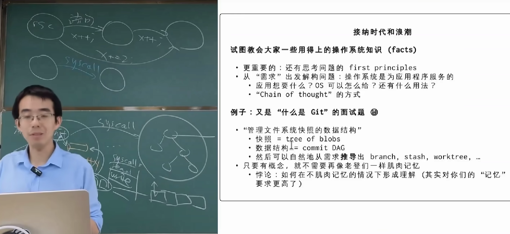
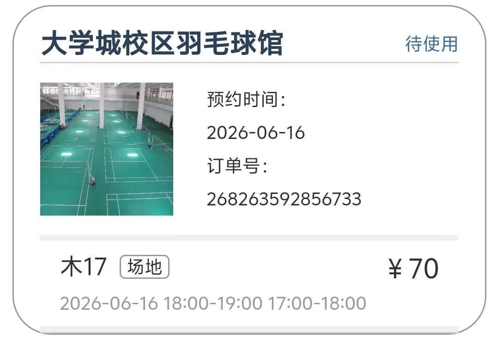
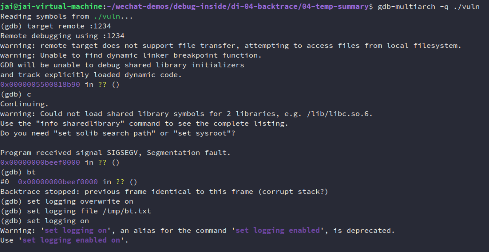
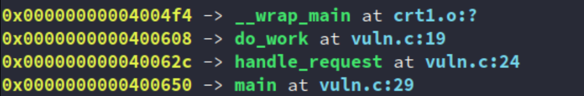

1. summary
这篇目前算是我这个 backtrace 系列的暂时完结。
从上周五开始到今天刚好一周，写了：
- backtrace（一）：从底层到本质：理解函数调用与 LR/FP 的设计与思想
- backtrace（二）：事实与语义：深度解构 ELF 符号表与 DWARF 调试信息（上）
- backtrace（二）：事实与语义：深度解构 ELF 符号表与 DWARF 调试信息（下）
- backtrace（三）：从 FP 到 DWARF ：解析用户态回溯技术
- backtrace（四）：Linux内核的 ORC Unwinder 与 SFrame 解析
第一次写公众号，也是第一次写这么长的内容。（写得比较烂但是能看）
确实在学/写的过程中了解了很多东西（GDB 和优化、debug info/symtab 的取舍方案、ARM64安全相关的PAC......），甚至关注到了一些社区正在开发讨论的东西（SFrame），可谓收获颇丰。
而且这么学下来，完全不是是在肌肉记忆一些东西，真的是只要我脑子里又概念，哪怕不用agent，就简单地问个网页版的AI，我都能学到更多东西（尽管我目前还是想要以自己的想法为主，做不到像老师把这么多权限/能力，（上/下）放给agent）。
也算是认识到蒋炎岩老师昨天说的（尽管确实有一些悖论）：

但总而言之，这一周写这玩意确实收获挺多，当然我也并不是完全每天都在写，时不时去打个球给我东哥上一下强度也是很爽的🤣🤣🤣

1.1 有始有终
但我觉得我还是有必要有始有终啊，因为这个系列就是因为遇到了类似下面的错误才写的[2]：
(gdb) bt
#0 0xb38e32c4 in pthread_getname_np () from /home/enrique/buildroot/output5/staging/lib/libpthread.so.0
#1 0xb38e103c in __lll_timedlock_wait () from /home/enrique/buildroot/output5/staging/lib/libpthread.so.0
Backtrace stopped: previous frame identical to this frame (corrupt stack?)
而且我也没写上 [2] 中描述的手动 backtrace 的骚操作，但我觉得最后这里就放一些tips吧：
Backtrace stopped: previous frame identical to this frame (corrupt stack?)的本质不是“GDB发现栈损坏了”，而是“GDB无法继续完成 stack unwinding，并且检测到回溯结果进入自循环，因此怀疑栈可能损坏”。
真正原因总结：
- 栈确实损坏（saved LR / FP 被覆盖）
- 没有 frame pointer
- 没有 DWARF unwind 信息
- 可执行文件被 strip
- 编译优化（特别是 Tail Call）
- GDB 对 ARM 某些库函数或异常栈帧展开失败
因此：bt 失败 ≠ stack 坏了
更准确地说：bt 失败 = GDB 无法可靠地完成 stack unwinding，这才是我理解这类问题最重要的 frist principle。
1.2 more
当然并不是说这个系列就结束了，实际上还有很多的细节和别的领域可以写：
- RTOS 的
unwind？MCU应该也会有各种dump的，就像你进hardfault，backtrace咋做，自己实现hardfualt handler，存memory + regs嘛 ，也有很多文章：- How to debug a HardFault on an ARM Cortex-M MCU | Interrupt]：https://interrupt.memfault.com/blog/cortex-m-hardfault-debug#registers-prior-to-exception
- 一文讲透：STM32进入HardFault如何调试？从寄存器到代码定位
- Android 的
tombstone，高通的ramdump等等 - ......
只要和 ELF 和 dump 相关的，感觉都可以写进来这个系列来😅😅
还有点：之后写微信公众号或者不这么长吧（也没人看，不过我本来也不是给人看，按照自己完整来吧）。
最后放上最近看到的这张图[1]，感觉好好笑哈哈🫠🫠
2. 复现 [1] 中的问题
代码：https://github.com/JAILuo/wechat-demos/tree/main/debug-inside/di-04-backtrace/04-temp-summary
#include <stdio.h>
void fake_lib_crash() {
printf("[+] 进入底层库，即将发生寄存器损坏...\n");
// 模拟一个极其隐蔽的野指针漏洞或上下文损坏。
// 我们直接用内联汇编破坏当前的 Frame Pointer (x29) 和 Link Register (x30)。
// 注意：这不会破坏栈上的"内存"，它只是破坏了当前的"寻址路标"。
__asm__ volatile (
"mov x29, #0xdead0000\n" // 破坏栈帧指针 FP，让 GDB 迷路
"mov x30, #0xbeef0000\n" // 破坏返回地址 LR
"ret\n" // 强制跳转到 0xbeef0000 触发段错误
);
}
void do_work() {
printf("[+] do_work 执行中...\n");
fake_lib_crash();
}
void handle_request() {
printf("[+] handle_request 执行中...\n");
do_work();
}
int main() {
printf("=== AArch64 真实栈损坏恢复实验 ===\n");
handle_request();
return 0;
}
构建：
aarch64-linux-gnu-gcc -O0 -g -fno-omit-frame-pointer -no-pie -o vuln vuln.c
qemu-aarch64 -L /usr/aarch64-linux-gnu/ -g 1234 ./vuln &
另一终端：
gdb-multiarch -q ./vuln
(gdb) target remote :1234
(gdb) c
...
(gdb) bt
#0 0x00000000XXXXXXXX in ?? ()
#1 0x00000000XXXXXXXX in ?? ()
Backtrace stopped: previous frame identical to this frame (corrupt stack?)

然后复现操作：
(gdb) set logging overwrite on
(gdb) set logging file /tmp/bt.txt
(gdb) set logging on
(gdb) x/64gx $sp
(gdb) set logging off
把日志存到外部去，然后用脚本命令解析。
不过这里需要注意的的是：
博客作者当时的程序是开启了 PIE 或者是**在分析动态链接库（.so）里的地址，所以他必须借助
/proc/pid/maps来计算真实的相对偏移量（offset = address - page start + base offset）。 **而我们在上一步编译时使用了
-no-pie，代码加载地址是固定的绝对地址（如0x400608）。这意味着我们不需要计算偏移，可以直接把栈里扫出来的地址喂给addr2line。这让我们的自动化脚本比博客里的更加优雅。
脚本如下：
cat /tmp/bt.txt | grep -o '0x[0-9a-fA-F]\+' | sort -u | grep -v '0x0000000000000000' | while read ADDR; do
# 调用 addr2line 解析地址
LINE=$(aarch64-linux-gnu-addr2line -e ./vuln -f -C $ADDR)
# 如果解析结果里没有包含 '??'，说明这是一个有效的代码地址
if ! echo "$LINE" | grep -q '??'; then
# 模仿原博客的输出格式：地址 -> 函数名和行号
# 将换行符替换为 " at " 让输出更好看
FORMATTED_LINE=$(echo "$LINE" | tr '\n' ' ' | sed 's/ $//')
echo "$ADDR -> $FORMATTED_LINE"
fi
done
或者这个：
cat /tmp/bt.txt | grep -o '0x[0-9a-fA-F]\+' | sort -u | grep -v '0x0000000000000000' | while read ADDR; do
LINE=$(aarch64-linux-gnu-addr2line -e ./vuln -f -C $ADDR)
if ! echo "$LINE" | grep -q '??'; then
# 高效拆分（使用内置 read 避免多次管道）
FUNC=$(echo "$LINE" | head -1)
LOC=$(echo "$LINE" | tail -1)
FILE=$(basename "$LOC")
# 检查终端是否支持颜色（可选）
if [ -t 1 ]; then
# 终端环境 -> 带颜色
echo -e "\033[1;33m$ADDR\033[0m -> \033[1;32m$FUNC\033[0m at \033[1;36m$FILE\033[0m"
else
# 重定向到文件或管道 -> 纯文本
echo "$ADDR -> $FUNC (at $FILE)"
fi
fi
done

如果你拿到了我的仓库的代码，直接执行：./run.sh 即可。
参考
[1] 30 - Agentic AI 和我们的未来；课程总结 [2026 南京大学操作系统原理]：https://www.bilibili.com/video/BV1q2jh6FEhX
[2] Figuring out corrupt stacktraces on ARM：https://eocanha.org/blog/2020/10/16/figuring-out-corrupt-stacktraces-on-arm/